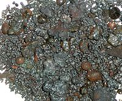

Numero atomico: 5
Massa atomica: 10,81
Temperatura di fusione (°C): 2300
Temperatura di ebolizione (°C): 3650
Energia di prima ionizzazione (kj/mol): 801
Elettronegatività (secondo Pauling): 2,04
Densità: 2,47
Numeri di ossidazione: +3
Configurazione elettronica: 1s2, 2s2, 2p1
Maggiori Informazioni